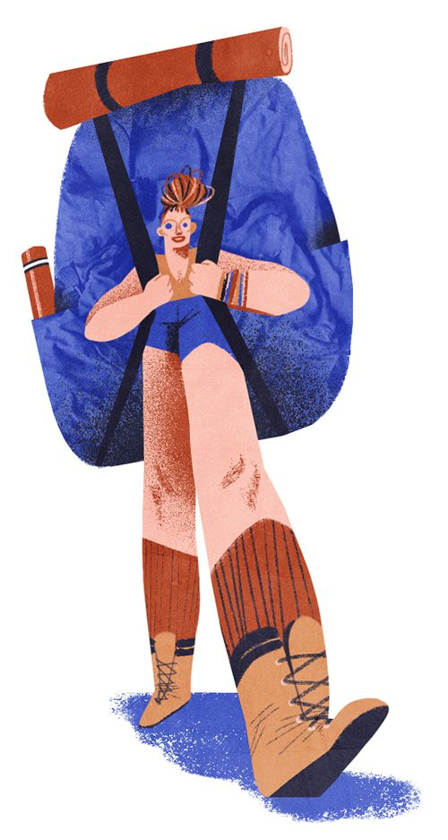
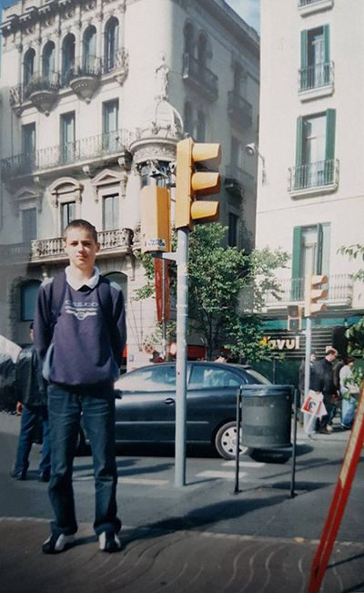
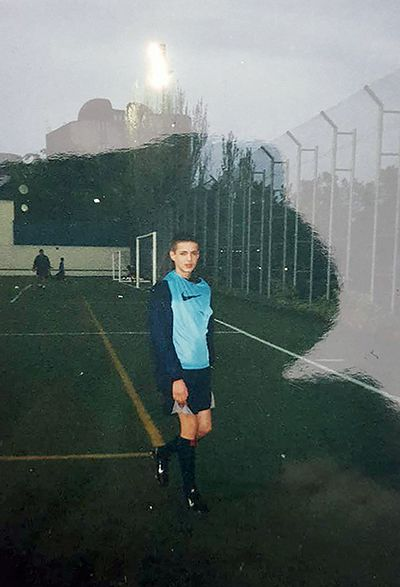
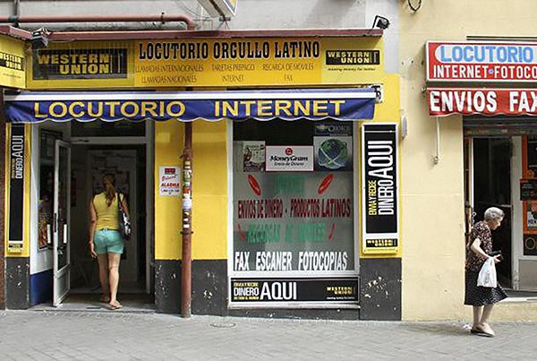

Футбол всегда был главным в жизни моего отца, задолго до моего рождения.
С первого шага он начал приучать меня к мячу, а в шесть лет договорился с тренером детской школы донецкого «Шахтёра», чтобы я начал тренировки раньше остальных.
Работая переводчиком в футбольном клубе «Металлург» (Донецк), зимой 2004 года отец поехал с командой на сборы в Испанию. Там он отправился на тренировочную базу FC Barcelona и рассказал тренерам о перспективном игроке 1990 года рождения, который вынужден расти в далёком Донецке.
Тренеры поверили ему и прислали официальное приглашение на просмотр.
Средств у нас было немного, поэтому после получения двухнедельной шенгенской визы отец уволился с работы, занял пару тысяч долларов у знакомых – и в мае 2004 года мы отправились автобусом из Киева в Барселону.
Конечно же, маленький худой мальчик, пусть и с неплохой техникой, не произвёл сильного впечатления на местный тренерский состав. В команде были собраны лучшие игроки не только из Испании, но и со всего мира. Я не ударил в грязь лицом, но подвинуть кого-то из этих мощных детин у меня не было ни единого шанса.
Мой отец был отчаянным авантюристом. Возвращаться домой и медленно отдавать долги он не хотел, поэтому мы остались в Барселоне как нелегальные мигранты. Впереди было много интересного: жизнь на улицах, поиски пищи, переезд в Швейцарию и множество нарушений Уголовного кодекса. Полтора года невероятных приключений не могли не отразиться на моей юной психике.
Спустя год после возвращения в Донецк я начал писать эту историю, но быстро остановился: мне было скучно и неприятно вновь копошиться во всех этих мрачных делах минувших дней.
Спустя ещё десять лет я отредактировал написанный фрагмент, постарался привести его в соответствие со своим сформировавшимся литературным слогом и выложил в общий доступ. Читатели отозвались тепло и настойчиво потребовали продолжения.
Ещё полгода я собирался с духом и переживал, что не смогу припомнить даже половину важных деталей из жизни в Швейцарии: всё-таки с тех событий прошло целых тринадцать лет. Но когда я, наконец, решил покончить с этой проклятой историей и сел за работу, то в процессе начали вспоминаться даже имена второстепенных персонажей, а благодаря Google Street View я смог рассмотреть все злачные места, в которые нас с отцом занесла судьба.
Конечно же, что-то осталось за кадром, ведь вспомнить всё просто невозможно. И если кто-то из вас в процессе чтения подумает, что я сгущаю краски, то смею вас разубедить: никакой гордости за это европейское турне я не испытываю. Скорее наоборот: дописав историю, я поймал себя на мысли, что начинаю оценивать поведение юной версии себя чересчур критично.
Май 2004 года, Барселона.
Мне четырнадцать. Сверстники готовятся к первым экзаменам после окончания девятого класса.
Идёт ливень, но никакой грязи на подошвах ни у меня, ни у отца. Это в Донецке после дождя приходилось чистить обувь и стирать джинсы. Это в Донецке после некоторых осадков овощи покрывались тёмными пятнами. Это в Донецке после каждого ливня автомобили становились чёрными.
Но непривычная чистота Барселоны нисколько меня не радовала. Мои мысли были заняты совершенно другими вопросами: «Что мы будем есть?» и «Где мы будем спать?»
Мы с отцом направлялись к ближайшей станции метро, планируя добраться до автовокзала и пережить там грядущую ночь. Все четыре руки были заняты большими, тяжёлыми, забитыми до упора сумками.
— Па, давай посидим отдохнём, я уже не могу.
— Будь мужчиной, не скули.
Мы спустились в метро и подошли к пропускным пластиковым воротам. Чтобы открыть их, требовалось шестьдесят центов. В наших карманах насчитывалось только двадцать пять.
Рослый темнокожий полицейский, дежурящий в своей будке, увидев печальные глаза худого мальчика и его бледного отца, сжалился и пропустил нас, открыв ворота своей служебной карточкой.
— Мучас грациас, — поблагодарил отец.
Мы подошли к платформе и сразу же сели в подъехавший поезд. В вагоне свободных мест не оказалось. Я обречённо уставился в окно летящего к следующей станции состава. Слёзы лениво текли из глаз, просто смачивая ресницы и не претендуя ни на что большее.
Через три остановки отец молча поднял сумки и подошёл к дверям. Я с трудом поднял свои и стал позади него. Двери раскрылись, родитель повёл меня по мрачным подземным извилинам, спрашивая что-то на английском у прохожих, и в конце концов мы вышли на другую платформу.
— Это зелёная линия, по ней до вокзала доедем, — сказал отец.
«Да хоть фиолетовая. Я хочу спать. Не хочу бродить со всеми этими сумками по чужому городу в поисках свободной койки. Я хочу домой, понимаешь?» — подумал я.
Но в ответ лишь промямлил: «Хорошо».
На вокзале стояли железные, узкие и неудобные для сна лавки. Но выбирать нам было не из чего. Мы легли на две смежные скамейки, укутавшись шерстяными одеялами поверх одежды. Я не мог уснуть не только из-за голода, но ещё из-за того, что лежал в центре ярко освещённого вокзала, между сотнями снующих людей, под голос диктора, беспрерывно зачитывающего какую-то информацию о прибывающих поездах.
На следующий день, проходя мимо одной из центральных площадей города, мы услышали русскую речь и подошли поближе. Вокруг четырёх отдельных скамей суетился русскоговорящий народ. Пока отец знакомился со всеми этими выходцами из братских стран, я наблюдал за тем, что происходит вокруг.
По периметру площади располагались разноцветные палатки, внутри которых шла торговля сладостями, сувенирами, надувными шариками и кормом для голубей. Туристы покупали корм и, отойдя на несколько шагов от палатки, угощали им птиц. Толстые, ленивые голуби не торопясь подходили к корму и начинали его медленно, как бы нехотя, поедать.
Я отвлёкся от этих неблагодарных существ и прислушался к тому, что говорит отец. Он спрашивал у новых знакомых о работе и о том, где найти ночлег двум обанкротившимся странникам.
— Здесь полно благотворительных притонов, сейчас я покажу вам пару мест. Карта есть?
Любезная пожилая дама отметила на отцовской карте три точки, где, по её словам, нам могут предоставить бесплатную ночлежку. Отец поблагодарил женщину и стал расспрашивать стоящих рядом мужчин о работе. Оказалось, что все они в точно таких же поисках.
— Работа здесь для нас одна — стройка. Но всё забито. Вот представь, что каждый день сюда приезжает как минимум двое таких молодцов, как вы. Людей много, а работы мало. Я сам уже месяц ищу, и что? Хер собачий, а не работа. Некоторым фартит — в первый же день находят. Так что вы нос не вешайте. Может, и повезёт.
Весь оставшийся день мы ходили по местам, отмеченным женщиной на карте. Барселона — большой город, а с четырьмя набитыми сумками в руках он становится ещё больше. Гораздо больше.
Мы пришли в первый приют и долго стучали в железную дверь с круглой дверной ручкой, как на домах вампиров, сооружённых в голливудских киностудиях.
Дверь открылась, и из здания вышла пожилая женщина, с улыбкой, похожей на оскал.
— Буэнос тардес… — тихо поздоровалась хозяйка.
— Буэнос тардес! Ду ю спик инглиш? — спросил отец.
— Но, но! Эспаньёл, — ответила бабуля, растянув улыбку так широко, что глаза её сузились.
Дальше отец кое-как объяснил, что он с сыном ищет ночлег. Соединив ладони, он поднёс их к правой щеке, чуть-чуть наклонив голову вправо, и сказал:
— Ви вонт ту слип хир. Аки, слип.
— Соньё аки?
— Си, си, соньё!
Бабушка развела руками, пожала плечами и что-то пробормотала на испанском. Я не разобрал слов, но было понятно, что ответ отрицательный.
Ко второму пункту назначения мы добрались ровно в девять часов вечера. Стемнело. На этот раз не было круглой дверной ручки — был лишь звонок, в который отец долго давил, но дверь так никто и не открыл.
Оставался последний приют. Снова идти на другой конец города с этими сумками у нас уже не было никаких сил. Мы сели на лавку, вытащили двухлитровую бутылку минеральной воды и четыре охотничьи сосиски, оставшиеся ещё с домашнего тормозка. Это была наша последняя еда.
Мы молча жевали, каждый в своих мыслях. Я поднял глаза на почерневшее небо.
— Дождь пойдёт.
— Сейчас отдохнём — и на вокзал попилим.
— Пешком опять? Я уже не могу.
— Сможешь.
Мой отец был практически точной копией Бегби из фильма «На игле». Как по внешности, так и по характеру. Спорить с ним было бесполезно. Я отвернулся и, упершись локтями в бёдра, опустил лицо на ладони.
На горизонте виднелось море.
Мне хотелось утопиться.
— Идём, — сказал он, поднявшись с лавки, — на метро доедем. Дождь начинается, промокнем к чёртовой матери.

Illustration: Maria ShishovaНа рассвете нас разбудил полицейский.
— Ви, а клоузд. Кло-узд. Плиз, гоу аут.
Он выпроводил нас с вокзала и поставил на сигнализацию автоматические входные двери.
На улице шёл ливень.
Вместе с нами из здания вокзала вышла молодая симпатичная девушка с большим походным рюкзаком и разноцветными косичками на голове. Она завела разговор с отцом на английском.
Я стоял и смотрел, как дождь наполняет мусорные баки. В это время они с отцом расстелили большую брезентовую подстилку вдоль стены, стараясь уместить её под небольшим сухим куском асфальта, закрытым от дождя карнизом.
Отец разложил на брезенте наши одеяла, и мы легли втроём на эту уличную кровать, чуть ли не прижимаясь друг к другу. Засыпая, я думал о том, кто эта девушка, откуда у неё взялся этот брезент и зачем она спит на улице с двумя украинскими неудачниками.
«Неужели у неё нет денег на гостиницу? Наверное, есть, но она экстремалка и ищет приключений. А мы — наоборот, ищем комфорта», — так думал четырнадцатилетний я, лёжа под входом на вокзал в Барселоне.
Мы проснулись через несколько часов — нас разбудил полицейский, сообщив, что вокзал открывается. Он попросил нас удалиться, ведь мы лежали прямо у центрального входа. Упаковав в сумки свои одеяла, мы попрощались с немецкой девушкой и направились в сторону своей последней надежды — жирной синей точки на помятой карте Барселоны.
Тем утром в городе было холодно и пусто. Хотя уже ездили автомобили и тротуары заполнялись людьми, город всё равно казался мёртвым. К восьми часам всё ожило.
Синяя точка на карте привела нас к церкви. Мы вошли в большой тёмный холл овальной формы. Таких высоких потолков я ещё не встречал — но мне было не до потолков. Холл был забит какими-то дурно пахнущими людьми: бомжами, беззубыми стариками и, кажется, сумасшедшими.
На больших механических часах над закрытыми дверьми, соединяющими этот огромный зал с внутренней частью церкви, стрелки показывали без пяти восемь. В холле стоял ужасный запах мочи и пота. Мне хотелось выйти на улицу, но отец придержал меня за руку:
— Я спросил у людей — в восемь откроют. Здесь кормят.
Ровно в восемь двери отворились. На проходе стал крупный черноволосый мужчина, он пропускал людей по одному: кого-то направляя вверх по лестнице, а кого-то прямо, в просторную кухню.

Очередь продвигалась быстро, и я понял, что стариков отправляют на кухню, а всех остальных — наверх. Но среди толпы не было подростков, поэтому было неясно, куда направят меня.
Когда дошла наша очередь, отца направили вверх, а меня прямо, к старикам.
Отец попросил, чтобы ему разрешили взять сына с собой, но черноволосый мужчина придержал меня за плечо и строго показал пальцем в направлении кухни.
Затем мужчина перетащил наши сумки к стене и показал жестами, чтобы мы за них не волновались.
— Как поешь — жди меня у входа, — сказал отец и пошёл вверх по лестнице, вместе с бомжами и сумасшедшими.
Я зашёл на кухню. Вдоль боковой стены располагались газовые печи и раковины, вокруг которых хлопотали монашки, одетые в католические чёрно-белые костюмы — я видел подобные в кинофильме «Жандармы из Сан-Тропе» с Луи де Фюнесом в главной роли.
В одной из раковин стоял огромный тазик с мыльной водой, и чернокожая монахиня полоскала в нём гору алюминиевых ложек и вилок.
Я старался не думать о том, кто ел этими приборами до меня.
На первое подали гороховый суп с кусками жилистой говядины. Я с трудом глотал эту жидкость. Мясо было жёстким и невкусным, каждый кусок я запивал водой, рассматривая белые стены и своих соседей. За столом сидело несколько десятков стариков, и все с интересом поглядывали на меня своими пустыми водянистыми глазами. Некоторые из них так ужасно скалили свои беззубые рты, что меня чуть было не стошнило. Но я всё-таки доел суп, опустошив попутно целый кувшин с водой.
На второе подали печень с рисом. От одного запаха мне стало дурно.
Однажды, в детстве, родители насильно пытались запихнуть её мне в рот — и я заблевал брюки отца, после чего получил от него порцию ругани и ударов ладонью по голове. Таким образом я добился права больше никогда не есть печёнку.
Самое ужасное, что рис был с лихвой залит печёночной подливой. Поэтому я съел только хлеб и конфеты, поданные на десерт.
Сидящие рядом старики отдали мне свои сладости. Я рассовал их по карманам.
Во время трапезы ко мне обратилась чернокожая монахиня. Кажется, она говорила на английском, но с таким сильным акцентом, что я не мог разобрать ни слова. Когда она показала пальцем на мою нетронутую тарелку, я наконец понял, чего она от меня хочет, и отрицательно покачал головой. Монахиня забрала мою порцию, отдав её кому-то из стариков, вручила мне большое зелёное яблоко и проводила к выходу. За всё время на её лице не появилось и тени улыбки. Я удивился — ведь в этом городе улыбались все, даже когда их улыбка была неуместной.
Я вышел из кухни с тошнотой в горле. Слева от входа лежали наши сумки. Забрав две из них, я вышел из церкви и сел на лавку неподалёку. В холле собиралась новая партия бродяг. Кто-то курил на улице. Такой концентрации пропитых физиономий я не видел даже возле рюмочных в Донецке.
Через пятнадцать минут вышел отец с двумя оставшимися сумками в руках — он всегда ел медленнее. Вид у него был решительный:
— Я поговорил с тем мужиком на входе. Он дал мне адрес офиса Красного Креста. Сказал, что нам нужно обязательно сходить туда и зарегистрироваться. Я думаю, может, там нас направят в какой-нибудь пансион.
— Да куда там нас направят…
— Бери сумки — и вперёд!
Электронный термометр на одной из центральных улиц Барселоны показывал 38 градусов.
Всю дорогу мы шли молча, несколько раз останавливаясь, чтобы передохнуть в тени и свериться с картой.
— Так, вот метро Rocafort. Нам налево, значится. Минут через двадцать будем на месте.
Мы свернули на широкий проспект. Мимо нас сновали толпы туристов, испанская молодёжь — кучерявые парни с одинаковыми модными причёсками и старики на электрических инвалидных креслах.
— Красный Крест прямо по курсу, — сказал отец. — Ещё немножко, терпи.
— Жарко, у меня кепка сейчас задымится.
— Не умрёшь.
Справа от тротуара тянулись бесконечные кафе с открытыми площадками. За столиками распивали кофе довольные жизнью люди. Я смотрел на них с завистью и злобой.
Наконец мы подошли к стеклянной двери, над которой светилась большая эмблема Красного Креста с надписью «Creu Roja». Внутри было прохладно — работали кондиционеры. Мы вошли в большую квадратную комнату ожидания с белыми стенами и низкими потолками. Правая стена была прозрачной и служила перегородкой, за которой находился сам офис: четыре стола с компьютерами, за которыми работали служащие. Перед каждым сидели пришедшие за помощью люди.
Через весь зал тянулась змейкой очередь из пятидесяти человек, и мы пристроились в конец.
Электронный термометр на одной из центральных улиц Барселоны показывал 38 градусов.
Всю дорогу мы шли молча, несколько раз останавливаясь, чтобы передохнуть в тени и свериться с картой.
— Так, вот метро Rocafort. Нам налево, значится. Минут через двадцать будем на месте.
Мы свернули на широкий проспект. Мимо нас сновали толпы туристов, испанская молодёжь — кучерявые парни с одинаковыми модными причёсками и старики на электрических инвалидных креслах.
— Красный Крест прямо по курсу, — сказал отец. — Ещё немножко, терпи.
— Жарко, у меня кепка сейчас задымится.
— Не умрёшь.
Справа от тротуара тянулись бесконечные кафе с открытыми площадками. За столиками распивали кофе довольные жизнью люди. Я смотрел на них с завистью и злобой.
Наконец мы подошли к стеклянной двери, над которой светилась большая эмблема Красного Креста с надписью «Creu Roja». Внутри было прохладно — работали кондиционеры. Мы вошли в большую квадратную комнату ожидания с белыми стенами и низкими потолками. Правая стена была прозрачной и служила перегородкой, за которой находился сам офис: четыре стола с компьютерами, за которыми работали служащие. Перед каждым сидели пришедшие за помощью люди.
Через весь зал тянулась змейкой очередь из пятидесяти человек, и мы пристроились в конец.
Электронный термометр на одной из центральных улиц Барселоны показывал 38 градусов.
Всю дорогу мы шли молча, несколько раз останавливаясь, чтобы передохнуть в тени и свериться с картой.
— Так, вот метро Rocafort. Нам налево, значится. Минут через двадцать будем на месте.
Мы свернули на широкий проспект. Мимо нас сновали толпы туристов, испанская молодёжь — кучерявые парни с одинаковыми модными причёсками и старики на электрических инвалидных креслах.
— Красный Крест прямо по курсу, — сказал отец. — Ещё немножко, терпи.
— Жарко, у меня кепка сейчас задымится.
— Не умрёшь.
Справа от тротуара тянулись бесконечные кафе с открытыми площадками. За столиками распивали кофе довольные жизнью люди. Я смотрел на них с завистью и злобой.
Наконец мы подошли к стеклянной двери, над которой светилась большая эмблема Красного Креста с надписью «Creu Roja». Внутри было прохладно — работали кондиционеры. Мы вошли в большую квадратную комнату ожидания с белыми стенами и низкими потолками. Правая стена была прозрачной и служила перегородкой, за которой находился сам офис: четыре стола с компьютерами, за которыми работали служащие. Перед каждым сидели пришедшие за помощью люди.
Через весь зал тянулась змейкой очередь из пятидесяти человек, и мы пристроились в конец.
Когда мы вошли внутрь, многие из присутствующих обернулись и посмотрели на нас с любопытством: мы были единственными белокожими посетителями. В основном здесь находились латиноамериканки от шестнадцати и до пятидесяти. Почти всех их связывала общая деталь — плачущие грудные дети на руках. Все они создавали адскую симфонию, не участвовали в хоре только спящие в колясках. Те, кто уже мог стоять на ногах, ревели и требовали чего-то от своих мамаш.
Очередь продвигалась медленно. Местные клерки не торопились: они не спеша вводили данные в компьютер, заполняли бумаги и много улыбались, как заколдованные.
Я попытался задремать, распластавшись у стены на наших сумках под холодным бризом кондиционера, пока отец стоял в очереди. Но безумный вихрь детских воплей начисто лишил меня сна.
Наша очередь подошла через шесть часов. Мы попали за стол к пожилой испанке — на её бейдже было написано «Clara».
Отец отдал документы и получил бланк с вопросами на английском: биографические данные, семейное положение, профессия etc.
Мне как несовершеннолетнему бланк не полагался. Отец за десять минут заполнил все пробелы и отдал бумаги.
Клара неторопливо ввела данные в компьютер. Из принтера вышел документ с официальным гербом Красного Креста, который она передала отцу. С этим документом мы должны были сходить в другой офис организации.
Через десять минут мы были на месте, быстро дождались очереди, прошли все формальности, включая заполнение дополнительных бланков, и наконец стали обладателями официальных документов, подтверждающих нашу регистрацию в Creu Roja.
В графе «адрес» отцу пришлось ввести координаты отеля, из которого мы уже давно выселились, потому что без адреса служащий по имени Карлос отказался выдать нам удостоверения. На этот адрес, сказал он, нам будут приходить очень важные официальные уведомления. Возможно, заметил Карлос, в скором времени моему отцу предоставят работу. К тому же раз в две недели нам полагалась материальная помощь в районном отделении Красного Креста.
Куда теперь? Где спать будем? Я есть хочу.
— Я тоже есть хочу, ты не один такой несчастный. Пошли в тот пункт, куда нас направили, по дороге на площади остановимся, с людьми поговорим.
Мы пришли на площадь Каталонии.
— Подвиньтесь, пожалуйста , — попросил я двух кавказцев и уселся на освободившееся место.
Отец пошёл расспрашивать людей о работе.
— Какой худой, слушай! Что, совсем не кушаешь? — обратился ко мне один из соседей по лавке.
— Кушаю чуть-чуть.
— Почему чуть-чуть, малыш? Ты молодой, тебе нужно много кушать, чтоб акрэпнуть!
— Было бы что кушать — кушал бы. Я вообще всегда худой, даже когда много ем.
«Покормил бы лучше», — недовольно подумал я про себя.
— А почему кушать нету, дорогой? Нету денег — воруй, какие проблемы?
И как мы раньше не догадались?
— Здесь всё можно воровать, я тебе говорю. Заходишь в любой супэрмаркэт — и берёшь всё что надо! Никаких проблем, малыш.
— А камеры, охрана?
— Да какая нахуй ахрана! Я тебе говорю: заходишь и варуешь, никаких проблем. В штаны засунул колбасу, какую-нибудь шакаладку-макаладку дешёвую купил для отвода глаз — и пошёл дальше.
— Круто.
— О чём ты говоришь! Ты с отцом? Где отец твой?
— Вон там стоит. С усами.
— Хороший отец, молодой. Щас подойдёт — я ему всё расскажу.
Он на минуту замолчал, затем заговорил о чём-то на родном языке с соседом.
Я снова разглядывал голубей. До чего же они всё-таки наглые! У нас за пять метров улетают, а на этих, наверное, даже наступить можно.
И люди здесь такие же, без комплексов. Вон двое на газоне в одних трусах отдыхают — и нормально…
Интересно, надолго мы здесь застряли?
Самое обидное, что дома хотелось в Барселону так же сильно, как здесь хочется домой.
— Слушай, братан, а как вы вообще сюда попали?
— Ну как… На автобусе. Я в футбол сюда играть ехал.
— Футболист? Ай маладец! Нападающий?
Чёрт, снова нападающий. Все любят нападающих.

Да, нападающий.
— И что, играешь? Взяли?
— Не взяли.
— А, пидарасы! Почему не взяли? Плохо играл?
— Да неплохо, вроде… Не захотели иностранца — сказали, что много проблем с документами. Только непонятно, зачем тогда приглашение делали.
— Да гондоны они все, я их маму ебал. И чё теперь — домой не едете?
— Долги надо отдавать, папа деньги занимал на поездку. Пока не отдадим — не вернёмся.
— Ай-я-яй, да я сам такой, долгов дома — выше крыши. И хер тут чё заработаешь, я тебе скажу. Ты совсем молодой — кто тебя на работу возьмёт? Папа, может, и найдёт что-то, если повезёт. На стройку попадёт если — тут все на стройке. Бабы со старухами сидят, говно их убирают за копейки, а мужики на стройке.
— Понятно.
— Вот такие дела, дорогой, вот такая хуйня здесь творится. Дай бог вам повезёт — хорошим людям должно везти. Я сам уже год здесь, из них работал месяцев шесть. Сейчас снова херня. Сижу на этих лавках, сижу…
Да уж, действительно херня . Нормальный мужик оказался… Я слишком нервным стал. Сегодня опять на улице спать, поесть бы тоже не мешало. Может, действительно что-то украсть?
Подошёл отец:
— Давай, двигаем дальше.
Мой сосед отвлёкся от разговора с земляком и повернулся к нам.
— Слушай, как тебя зовут, отец?
— Сергей.
— Заза.
Они обменялись рукопожатием.
— Слушай, Сергей, пацан твой говорит — кушать нечего, почему не воруешь?
— В смысле?
— Не воруешь почему, спрашиваю? Биджё, здесь всё можно воровать, заходишь в любой супермаркет — и в штаны себе сюда пихаешь, — он показал куда.
Отец улыбнулся и развёл руками.
— Мы же не воры, Заза, не научены. Ладно, сына, бери сумки, нужно до шести в ту контору успеть.
— Ну счастливо, ребята, зря вы воровать не хотите.
Попрощавшись с Зазой, мы зашагали в сторону пункта Красного Креста.
Солнце к вечеру снизило обороты, и передвигаться стало легче. Мы торопились.
Я молча поглядывал на отца, он был явно чем-то обрадован.
— Только что с мужиком нормальным разговаривал, он сам из Харькова. Уже год здесь живёт. Говорит, то есть работа, то нет; вот сейчас он нормально устроился — к эквадорцу какому-то, тот ему платит хорошо. Эквадорец этот при связях здесь, прораб… Объектов ему много дают, поэтому работа постоянно есть.
— Ну и что этот мужик?
— Он мне номер дал парня знакомого — его сейчас взяли на какой-то небольшой объект, дом вроде за городом строит. В общем, парню этому напарник нужен. Если он ещё не нашёл, то я прямо завтра на работу выйду. Сейчас позвонить ему нужно, зайдем в Locutorio. Возле офиса как раз зайдём в ту, пакистанскую.
— Столько народу работу ищет — наверное, он уже нашёл…
— Позвоним сейчас, узнаем.
— А почему он на площадь сам не пришёл за напарником? — спросил я.
— Устал после работы, живёт далеко. Позвонил этому мужику харьковскому, чтобы тот нашёл кого-нибудь. Харьковчанин этот подошёл через минуту после того, как мы пришли. Я к нему и подскочил мигом, как будто почувствовал, — говорил отец воодушевлённо.
— Ясно. Может, и правда повезёт.
— Повезёт, сына, повезёт. Всё у нас будет хорошо, я в этом уверен.
— Ты был уверен и в том, что меня в команду возьмут.
— Возьмут ещё, не скули. Говорю тебе — прорвёмся. У нас же ещё сигареты есть, не зря ж мы их везли. Сейчас пакистанцу в Locutorio предложим: может, купит — и еды возьмём.
Я минуту помолчал, обдумывая вопрос.
— Па, слышишь, а может, правда украдём что-нибудь, как тот грузин сказал?
— Ой, я тебя умоляю, мы ещё аферистов этих не слушали… Не хватает нам сейчас только в полицию попасть — депортируют моментально.
— Ну ладно, как скажешь.
Мы пришли в район, где находился пункт Красного Креста, и долго бродили по узеньким грязным улочкам в поисках входа.
Этот район мы сразу прозвали «пакистанским», потому что почти весь бизнес здесь принадлежал им: бюджетные гостиницы, в одной из которых мы жили первые дни; продуктовые лавки; магазины по продаже мобильных телефонов; парикмахерские и, конечно же, Locutorio — компьютерные клубы, в каждом из которых находилось по нескольку телефонных кабинок. Из них можно было звонить как по Испании, так и по всему миру. С их помощью мы держали связь с Донецком.
Наконец мы нашли тот самый офис. Он оказался закрытым. Отец некоторое время с остервенением подёргал за ручку двери.
— Поздно уже. Они до пяти, что-ли, работают. Пошли в Locutorio, из которого мы первый раз звонили: оно за углом тут.
Мы поздоровались с пакистанским администратором. Он сделал вид, что узнал нас.
— Из ит пасибл ви вил лив хир ауэр бэгс он э фью дэйз? — спросил отец, показывая на наши сумки.
— Ммммм, окэй, окэй.
Мне показалось, что он хотел спросить, почему и зачем, но не сделал это либо из-за неспособности сформулировать вопрос на английском, либо просто «вошёл в положение».
Пакистанец провёл нас вниз и показал, где оставить сумки. Подвал был заставлен габаритными картонными коробками и по площади оказался даже больше, чем верхняя часть помещения.
«Контрабанда», — подумал я про себя.
После этого отец вытащил из синей сумки Adidas нашу контрабанду — четыре блока Marlboro Lights. Пакистанец оказался человек деловым, а если точнее — жадным. Мы с большим трудом продали их по украинской себестоимости.
— И то хорошо, — пробормотал отец расстроенно.
— А ты говорил, что по 50 евро продадим.
— Скажи спасибо, что по 25 отдали.
«Спасибо, конечно. Еще спасибо за то, что нам сегодня негде спать».
Теперь настало время совершить звонок по поводу трудоустройства моего родителя. Я волновался. Отец занял одну из телефонных кабинок. Я попытался влезть к нему, но не поместился. Пришлось приоткрыть дверцу, чтобы слышать разговор, но отец недовольно свёл брови:
— Закрой, не слышно же нихера.
В помещении действительно было шумно. Из соседних кабинок доносились крики на непонятных языках. Я ухом прижался к прозрачной пластиковой двери, разделяющей меня с отцом. Он внимательно набирал номер, записанный в маленьком блокноте.
— Алё, Николай? Добрый день. Мне ваш номер дал Сергей из Харькова, на площади Каталонии. Сказал, вам напарник нужен. Ага, да… Мне сорок, Сергей зовут.
Я прирос ухом к пластику, перестал дышать и ощущать окружающий мир.
— Да, работал дома. Опыт есть. Я из Донецка. Дом свой сам строил. Сейчас, секундочку.
Он вытащил карту и ручку из нагрудного кармана рубашки.
— Так-с… Красная линия… Всё — вижу, вижу. Хорошо, через час буду там.
Он повесил трубку и вышел из кабинки.
— Ну что там?! — сверлил я отца взглядом.
— Сказал, встретиться нужно. Человеку же нужно видеть, кого он в напарники берёт. Думаю, нормально всё будет. Судя по голосу, он молодой пацан.

Отец отдал два евро за разговор, и мы вышли на улицу.
Неподалёку располагался продуктовый магазин — небольшой супермаркет в «американском» стиле. Я видел такие же в передаче «Вы — очевидец», где их постоянно пытаются ограбить какие-то перепуганные идиоты. После того как горе-бандит наставляет ствол на кассира, всегда случается какой-то форс-мажор: вор либо поскальзывается, либо ударяется головой о дверь, либо кассир успевает быстро достать ружьё и выстрелить в неудачника.
Мы купили куриные и свиные консервы стоимостью в один евро каждый. Пару помидоров и огурцов, хлеб.
Молча поели на лавке возле магазина. Я с большим аппетитом съел куриную с хлебом и помидором, а отец — свиную с хлебом и огурцом.
Оставшуюся пищу сложили в пакет и струси́ли с одежды крошки.
— Ну что, сына, попилил я к парню тому. Встретимся в Locutorio у пакистанца, где сумки оставляли. Я по карте посмотрел — мне идти туда минут тридцать от силы. Вернусь, короче, максимум через полтора часа. Поговори с пакистанцем тем, он нормальный парень вроде, пусть посадит тебя за комп на часик бесплатно.Он отдал мне в руки пакет с остатками еды и быстрым шагом пошёл в сторону нашей единственной надежды. Его трудоустройство ассоциировалась у меня с мягкой кроватью и горячим душем. И как я не понимал в Донецке, что самое главное в жизни у меня всегда было — это крыша над головой. И плевать нужно было на то, что кроссовки и куртку я донашивал за двоюродным братом.
Сейчас я согласился бы ходить в старом спортивном костюме всегда и везде, только бы попасть в грязный Донецк, в нашу облупленную съёмную квартиру.
После еды я почувствовал облегчение и немного расслабился. Потом загорелся мыслью о том, что отца возьмут на работу — и дела наши наладятся. Сразу вспомнилось, сколько раз я чувствовал эту надежду дома, когда он уходил на бесконечные собеседования — и возвращался с таким видом, будто его утвердили на должность. Удар, он, конечно, держать умеет. Ну, а чего волноваться? Ведь сын — футбольный гений, скоро станет миллионером и вытащит всю семью из нищеты.
Для отца я был боевым петухом из «Полковнику никто не пишет».
Бродить по окрестностям мне не хотелось: я боялся, что в любой момент может вернуться отец, а никакой связи у нас с ним не было.
Постепенно Locutorio заполнял народ, возвращавшийся с работы: из переговорных доносились слова на неизвестных языках, а за компьютеры садились люди, чтобы написать электронное письмо или пообщаться по веб-камере с родными. Ничего общего с компьютерными клубами в Донецке, ведь там можно было с интересом понаблюдать, как какой-то умелец уничтожает противника в WarCraft или пытается разминировать бомбу на точке А. В наших клубах все друг друга знали, и многие ребята ходили туда, чтобы убить скуку. Это же место действовало с точностью наоборот — оно её нагоняло.
Когда мне надоедало пялиться в чужие мониторы, я выходил на улицу, и слонялся вверх-вниз, постоянно оглядываясь: не идёт ли отец.
Спустя час я решил зайти в миниатюрный бар, расположенный прямо напротив Locutorio. За стойкой друг перед другом сидели двое мужчин: рослый бармен в расцвете сил и пожилой господин с торчащей изо рта сигарой: он вращал в руках пустую рюмку.
Они наблюдали за мерцающим экраном маленького телевизора, прикреплённого в дальнем углу этого крошечного заведения.
Я неуверенно сел на ближайший к входу стул и уставился в ящик.
«Сейчас выгонят», — подумал я про себя. Бармен крикнул в мою сторону: «Хола!» — и задал какой-то вопрос.
Я ответил ему идиотской улыбкой, показывая пальцем в сторону телевизора. Он рассмеялся, сказал «окэй» и вернулся к беседе с пожилым испанцем.
По ТВ показывали политические новости. Так как я не понимал ни единого слова, скука продолжала поедать мой мозг с прежней силой. Я посидел несколько минут — и ушёл с ещё большей тоской на душе.
Я вернулся в Locutorio, чтобы узнать время. До предполагаемого возвращения отца оставалось около четверти часа. Я полностью погрузился в фантастические размышления о том, как всё наладится, если его примут на работу, и одновременно о конце света, если этого не произойдёт.
© 2025 Dr.Gavrylin